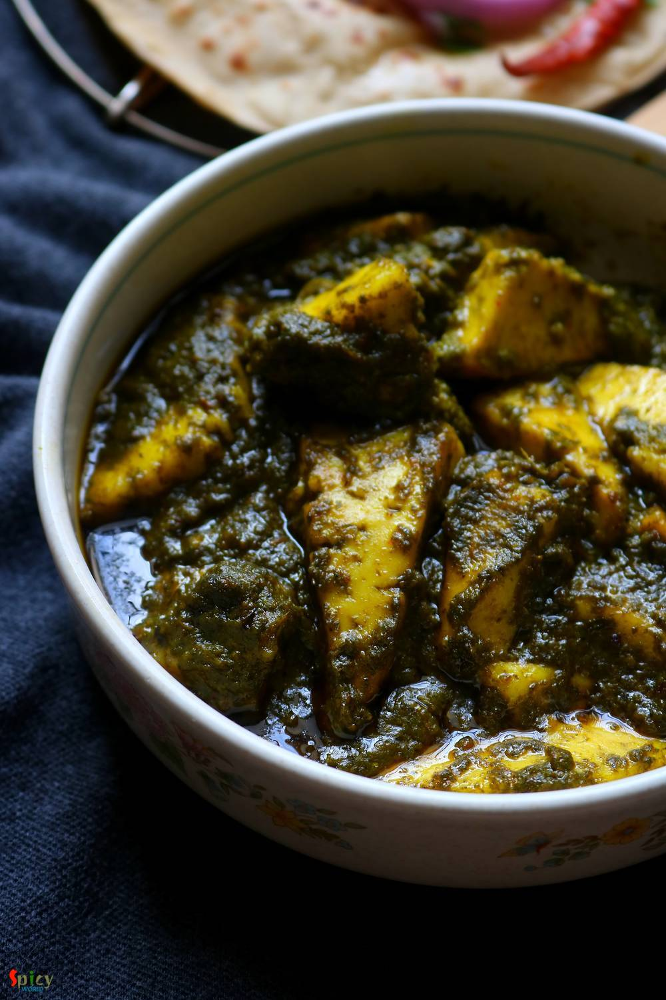

Simple and Easy Recipes
Quick Palak Paneer
© 2016 Spicy World, Published on: Dec 17, 2018
This palak paneer recipe is the best for weeknight dinner. Usually while making palak paneer, we need several kind of paste like onion paste, tomato puree, spinach paste, ginger garlic paste ... time consuming ! In this recipe everything will be stir fried in little amount of oil then we will make just one paste out of them. Creamy, tasty and buttery palak paneer will be ready in a jiffy ! Do give this recipe a try and let me know how it turned out for you.

Ingredients
- 15-18 pieces of paneer.
- 1 small onion, sliced.
- 4 big cloves of garlic, peeled.
- 2 inches ginger, peeled.
- 1 medium tomato, cut into chunks.
- 3-4 green chilies.
- Spice powder (Half Teaspoon of tuemeric powder, 1 Teaspoon of red chili powder, 1 Teaspoon of roasted cumin powder, 1.5 Teaspoons of roasted coriander powder).
- 1 Teaspoon of garam masala powder.
- Half Teaspoon of chat masala.
- 1 Teaspoon of kasuri methi or dry fenugreek leaves.
- 3 Tablespoons of butter.
- 5 Tablespoons of cooking oil.
- 3-4 Tablespoons of heavy cream.
- Salt and sugar as per your taste.
- Half cup of warm water.
- 2 cups of fresh and cleaned spinach leaves.


Steps
Heat 2 Tablespoons of oil in a pan.
Add the paneer cubes and fry for 2 minutes by flipping them. When they become golden in color, remove them from pan and put them in a bowl of warm water. In this way, fried paneer will remain soft.
Heat another Tablespoon of oil.
Add onion slices and cook for 2 minutes in medium flame.
Add the ginger and garlic. Cook for 2 minutes.
Then add tomato chunks and green chilies. Cook for 2-3 minutes.
Add the cleaned spinach leaves, cook on high flame for 3-4 minutes. Spinach will release water, dry it out by cooking a little further.
When everything will become soft and light brown in color, put the entire mixture in a blender along with little water. Blend it to a smooth paste.
Heat the remaining oil and 1.5 Tablespoons of butter.
Add all of the spice powder, cook for a minute on low flame.
Then add the onion spinach paste, cook for 5 minutes on medium flame.
Add salt and half Teaspoon of sugar. Mix well for a minute.
Add the fried paneer along with half of the water in which paneer have been soaked.
Cook for 2 minutes on medium flame.
Add garam masala powder, chat masala and kasuri methi. Mix well for 2 minutes.
Lastly add the remaining butter and heavy cream. Mix well for 1-2 minutes then turn off the heat. Let the curry rest for 30 minutes then serve.
Your quick palak paneer is ready to serve.
Serve this hot with plain roti or steamed rice.
")